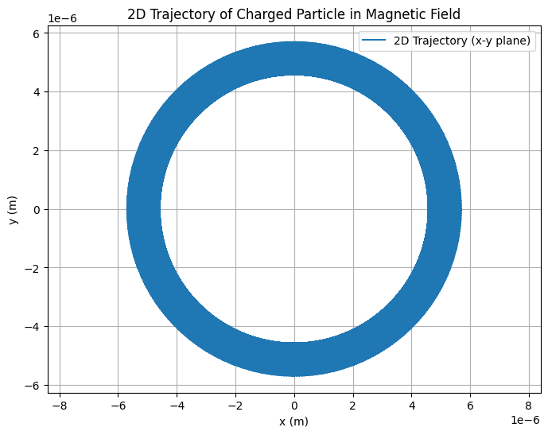
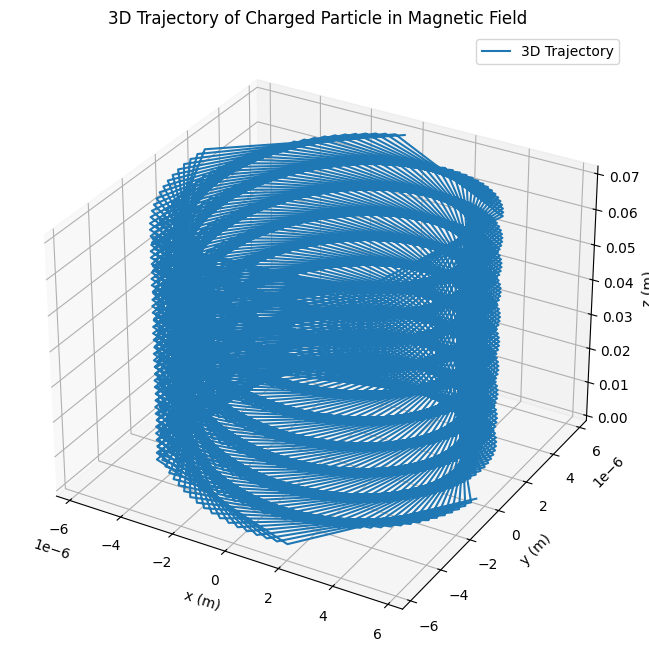

Problem 1
Simulating the Effects of the Lorentz Force
Motivation
The Lorentz force, expressed as: $$ \vec{F} = q(\vec{E} + \vec{v} \times \vec{B}) $$ governs the motion of charged particles in electric (\(\vec{E}\)) and magnetic (\(\vec{B}\)) fields.
This fundamental principle is pivotal in plasma physics, particle accelerators, and astrophysics.
By simulating these effects, we can explore practical applications and visualize complex trajectories of charged particles.
Deliverables
1 . Markdown Document: Explaining the task and methodology.
2 . Python Script/Notebook: Implementation of the simulations.
3 . Visualizations:
- Particle trajectories for specified field configurations.
- 2D and 3D plots highlighting key physical phenomena.
4 . Discussion:
- Relate results to practical systems like cyclotrons and magnetic traps.
- Provide suggestions for extending the simulation to non-uniform fields.
Tasks
1. Exploration of Applications
1 . Identify Systems:
- Particle accelerators.
- Mass spectrometers.
- Plasma confinement systems.
2 . Discuss Field Relevance:
- Analyze how electric (\(\vec{E}\)) and magnetic (\(\vec{B}\)) fields control particle motion.
2. Simulating Particle Motion
Simulate the trajectory of a charged particle under various field conditions:
1 . Uniform Magnetic Field: Visualize circular motion.
2 . Combined Uniform Electric and Magnetic Fields: Analyze helical motion.
3 . Crossed Fields: Examine drift motion.
3. Parameter Exploration
1 . Field Strength Variations: Adjust \(\vec{E}\) and \(\vec{B}\).
2 . Initial Velocity: Explore different values for \(\vec{v}_0\).
3 . Particle Properties: - Charge \(q\). - Mass \(m\).
4. Visualization
1 . Generate clear, labeled 2D and 3D plots.
2 . Highlight key phenomena like:
- Larmor radius.
- Drift velocity.
3 . Provide detailed explanations of the plots, emphasizing:
- How the trajectory corresponds to physical principles.
- The effect of different parameters (e.g., field strength, particle velocity) on the motion.
- Differences in trajectories under various configurations (uniform \(\vec{B}\), combined \(\vec{E}\) and \(\vec{B}\), crossed fields).
Implementation in Python
Numerical Methods
- Use Euler or Runge-Kutta methods to solve equations of motion.
- Employ libraries like NumPy for calculations and Matplotlib for visualization.
Example Simulation (Uniform Magnetic Field)
import numpy as np
import matplotlib.pyplot as plt
from mpl_toolkits.mplot3d import Axes3D
# Constants
eq = 1.6e-19 # Charge of the particle (C)
mass = 9.11e-31 # Mass of the particle (kg)
B = 1.0 # Magnetic field strength (T)
# Initial conditions
v0 = 1e6 # Initial velocity (m/s)
angle = np.pi / 4 # Angle of initial velocity with respect to the z-axis
# Derived quantities
omega = eq * B / mass # Cyclotron frequency
radius = mass * v0 / (eq * B) # Radius of circular motion
# Time parameters
time = np.linspace(0, 1e-7, 1000) # Time array
# 2D Trajectory (in x-y plane)
x_2d = radius * np.cos(omega * time)
y_2d = radius * np.sin(omega * time)
# 3D Trajectory (with initial velocity at an angle to the z-axis)
vz = v0 * np.cos(angle) # Z-component of velocity
vr = v0 * np.sin(angle) # Radial velocity in the x-y plane
z_3d = vz * time # Uniform motion along z-axis
x_3d = radius * np.cos(omega * time)
y_3d = radius * np.sin(omega * time)
# Plotting the 2D Trajectory
plt.figure(figsize=(8, 6))
plt.plot(x_2d, y_2d, label="2D Trajectory (x-y plane)")
plt.xlabel("x (m)")
plt.ylabel("y (m)")
plt.title("2D Trajectory of Charged Particle in Magnetic Field")
plt.grid()
plt.axis("equal")
plt.legend()
plt.show()
# Plotting the 3D Trajectory
fig = plt.figure(figsize=(10, 8))
ax = fig.add_subplot(111, projection='3d')
ax.plot(x_3d, y_3d, z_3d, label="3D Trajectory")
ax.set_xlabel("x (m)")
ax.set_ylabel("y (m)")
ax.set_zlabel("z (m)")
ax.set_title("3D Trajectory of Charged Particle in Magnetic Field")
ax.legend()
plt.show()
 
Explanation of Visualization
- The 3D plot demonstrates the trajectory of a charged particle in a uniform magnetic field.
- Circular motion is observed due to the Lorentz force acting perpendicular to the particle's velocity, creating a centripetal force.
- The radius of the trajectory (Larmor radius) depends on the particle's mass, charge, velocity, and the magnetic field strength.
- Variations in initial conditions or field parameters would alter the shape and size of the trajectory, which can be explored by modifying the simulation parameters.